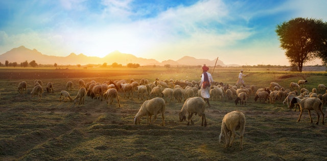

Ovelha
Ovis aries da sub-família caprinaeÉ um animal de enorme importância econômica como fonte de carne, laticínios, lã e couro. Criado em cativeiro em todos os continentes, a ovelha foi domesticada na Idade do Bronze, as ovelhas são, quase sempre, criadas em rebanhos. O manejo requer cuidados, seja pelo fato de se tratar de um rebanho grande, ou por serem animais sensíveis.
Basicamente, a ovelha (fêmea) é um animal dócil, e sem nenhum mecanismo natural de defesa; o que deve ter influenciado para, na cultura popular, estar associada à ideia de inocência.
Além do frio, os criadores devem atentar para raposas, lobos e outros predadores, que cercam as fêmeas e roubam-lhes os filhotes. A lã, retirada no início do verão, importante fonte de renda para o criador, torna a crescer, garantindo ao animal a sua própria defesa ao frio.
"Uma ovelha (liderado) conhece a voz do seu pastor (líder). Mas o pastor que não reconhece o berro de sua ovelha, perde-a".
- Surgiu: 9.000 a.c
- Tipo: Mamífero
- Idade Média: 12 anos
- Macho Adulto: 45kg
- Fêmea Adulta: 45kg
- Gestação: 5 meses
Existem hoje pelo mundo mais de 1400 raças diferentes de ovelhas. Isso porque durante a vida cada raça se desenvolveu e adaptou com maestria aos diferentes lugares e ambientes que vivia, e acredite elas podem ser encontradas em praticamente todos os lugares do globo.
A lã produzida pelas ovelhas muda ao longo de sua vida, com o passar do tempo a lã muda de textura, cor e densidade. Isso acontece da mesma forma que os pelos e fios de cabelo do nosso corpo com o passar do tempo.